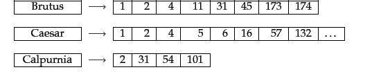
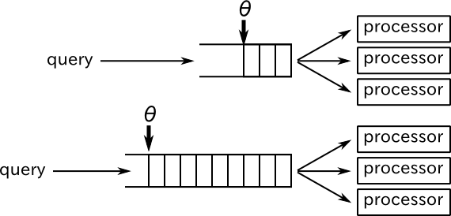
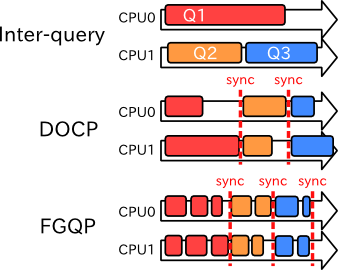

Web Engineering 2011
Yuto HAYAMIZU
48-096418
Kitsuregawa Lab.
SIGIR 2011
Posting List Intersection on Multicore Architectures
- Shirish Tatikonda IBM Almaden Research, San Jose, CA, USA
- B. Barla Cambazoglu Yahoo! Research, Barcelona, Spain
- Flavio P. Junqueira Yahoo! Research, Barcelona, Spain
Background: Multicore for Search Engine
Throughput and query latency are very important for search engines.
Higher throughput → supporting more and more users
Shorter query latency → better user satisfaction
- A number of optimizations employed for these two performance indicators.
An emerging multicore CPU gave a chance to decrease query latency.
- Finer-grained parallelization than ever
- Lower communication cost between processing cores
Where to Parallelize?
Posting list intersection
- Posting list … a list of document IDs where a certain word appears

- Amount of computation ∝ # of documents indexed
How to Parallelize?
Parallel Models
- Inter-query … One query as one task
- Proposal: DOCP-UI … DOCument Partitioning with unified index. Each processor Pi process a partial query, then partial results are aggregated.
- Proposal: DOCP-PI … DOCument Partitioning with partitioned index. Almost the same with DOCP-UI
- Proposal: FGQP … Fine-Grained
Query Partitioning. A single
posting list intersection job is partitioned into multiple small
jobs.
Fine-Grained Query Partitioning
(Here we assume items in posting lists are sorted)
- Pack each N items into a block
- Each block in the shortest posting list becomes a "seed" of one task
- Collect relevant blocks for each "seed task". This set of blocks is a task, and each task is pushed into task pool.
- "Relevant" block is a block which may have docIDs included in a "seed" block.
- Just concatenate results of patitioned tasks.
FGQP Task Creation Control

Task pool threshold: θ
- When the number of tasks in the pool < θ, the task producer pops a query from query queue and create intersection tasks.
- Smaller θ
- Shorter query latency
- Lower throughput
- Larger θ
- Longer query latency
- Higher throughput
Experimental Setup
Dataset
Environment
- Quad-core Xeon E5345 (Clovertown) 2.33GHz processor × 2 (a total of 8 cores)
- 6GB main memory
- All posting lists reside in memory.
Evaluation of Throughput and Latency
Throughput

- Inter-query and FGQP(θ = 150) model scaled almost linearly with the number of cores → Effective parallelization
- With low &theta ( = 5); value, FGQP could not always keep processors busy → Lower throughput than FGQP with θ = 150
- DOCP models performs worse than FGQP and Inter-query.
- Document partitioning suffered from load imbalance.
Evaluation of Throughput and Latency
Latency
- Almost constant latency for inter-query model.
- DOCP and FGQP decreased query latencies as the number of core increased.
- For FGQP, higher θ value resulted in longer query latency.
Summary
Two different paradigms for parallel posting list intersection for multicore
(Baseline: inter-query parallelization)
DOCP: Document Partitioning
- Non-negligible throughput degradation
- Effective use of multicore for decreasing latency
FGQP: Fine-grained Query Partitioning
- For aggresive task creation(high θ value)
- Throughput scaled almost linearly, and only 3.3% degradation when using 8 cores
- 3.7-fold latency improvement when using 8 cores
- For non-aggresive task creation(low θ value)
- 16% throughput degradation when using 8 cores
- 5.75-fold latency improvement with 8 cores
- Tunable for both throughput-sensitive and latency-sensitive situations via aggressiveness of task creation (θ value)
←
→
/
#